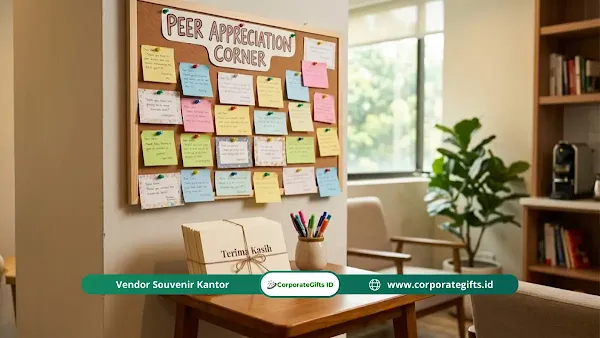

Corporate Gifts ID - Cara membangun program recognition yang efektif adalah dengan menjalankan tujuh langkah berurutan: menetapkan tujuan SMART, memilih jenis pengakuan, menyusun kriteria yang adil, menyiapkan anggaran, melibatkan pemimpin, mengomunikasikan program, dan mengukur hasilnya secara berkala.
Poin Kunci Program Recognition Efektif:
- Sistem Terstruktur: Mengakui kontribusi nyata karyawan secara konsisten, objektif, dan bermakna.
- Retensi Meningkat: Riset Bersin & Associates menemukan turnover sukarela 31% lebih rendah pada organisasi dengan apresiasi efektif.
- Dukungan Pemimpin: Keberhasilan bergantung erat pada keteladanan manajer dan kriteria seleksi yang transparan.
- Kombinasi Multi-Dimensi: Memadukan apresiasi formal, informal, peer-to-peer, dan penghargaan milestone masa kerja.
- Audit Rutin: Evaluasi minimal setiap enam bulan menjamin relevansi program dengan pertumbuhan bisnis.
Daftar Isi Artikel
- Apa Itu Program Recognition dan Mengapa Sangat Krusial?
- Mengapa Pengakuan Karyawan Berdampak Besar pada Performa Bisnis?
- Ringkasan 7 Langkah Membangun Program Recognition
- Langkah 1: Tentukan Tujuan Program Recognition Berbasis SMART
- Langkah 2: Pilih Jenis Program Recognition yang Sesuai
- Langkah 3: Tetapkan Kriteria yang Jelas dan Adil
- Langkah 4: Tentukan Anggaran yang Realistis
- Langkah 5: Libatkan Pemimpin sebagai Agen Recognition
- Langkah 6: Komunikasikan Program secara Menyeluruh
- Langkah 7: Ukur, Evaluasi, dan Kembangkan Program
- Kesalahan Umum dalam Membangun Program Recognition
- Tabel Komparasi Program Recognition Formal vs Informal
- Pertanyaan yang Sering Diajukan (FAQ)
Apa Itu Program Recognition dan Mengapa Sangat Krusial?
Program recognition adalah sistem terstruktur yang dirancang organisasi untuk mengakui, menghargai, dan merayakan kontribusi karyawan secara konsisten, adil, dan bermakna. Program ini bukan sekadar inisiatif musiman pemberian hadiah saat hari raya atau acara tahunan. Lebih dari itu, recognition adalah pilar strategis manajemen sumber daya manusia (SDM) yang menghubungkan etos kerja personal dengan visi jangka panjang perusahaan.
Riset yang dipublikasikan oleh Bersin & Associates (2012) menunjukkan bahwa perusahaan dengan program recognition yang sangat efektif dalam mengapresiasi kinerja memiliki tingkat voluntary turnover (karyawan berhenti secara sukarela) hingga 31% lebih rendah dibandingkan organisasi tanpa sistem apresiasi yang tertata. Sementara itu, studi Gallup (2016) menegaskan bahwa karyawan yang merasa jarang mendapatkan pengakuan memiliki potensi dua kali lipat lebih tinggi untuk mencari peluang kerja baru dalam kurun waktu satu tahun.
Mengapa Pengakuan Karyawan Berdampak Besar pada Performa Bisnis?
Secara psikologis, pengakuan memenuhi kebutuhan fundamental manusia akan rasa dihargai, divalidasi, dan memiliki kontribusi berarti. Ketika karyawan menyadari bahwa jerih payah, lembur kerja, dan inisiatif solutif mereka diperhatikan oleh jajaran pimpinan serta rekan sejawat, tercipta dorongan intrinsik yang kuat untuk mempertahankan standar keunggulan tersebut.
Dampak sistematis yang terbukti muncul dari implementasi recognition yang sehat mencakup:
- Lonjakan Produktivitas: Karyawan yang termotivasi menunjukkan fokus kerja dan efisiensi waktu yang lebih tinggi dalam mengejar target kuartalan.
- Penurunan Angka Absensi: Hubungan emosional yang positif dengan tempat kerja meminimalkan fenomena kelelahan mental (burnout) dan ketidakhadiran tanpa alasan.
- Penguatan Budaya Kolaborasi: Penghargaan berbasis tim mendorong karyawan untuk saling mendukung lintas fungsi tanpa terjebak dalam ego sektoral.
- Peningkatan Nilai Employer Branding: Reputasi tempat kerja yang penuh apresiasi menjadi magnet organik untuk menarik talenta terbaik di pasar tenaga kerja kompetitif.
Ringkasan 7 Langkah Membangun Program Recognition
Membangun skema apresiasi yang berkesinambungan membutuhkan pendekatan terstruktur. Berikut peta jalan tujuh langkah berurutan yang menjadi standar emas bagi tim HR dan jajaran manajemen:
- Tentukan tujuan program recognition: Menyelaraskan inisiatif dengan objektif bisnis organisasi.
- Pilih jenis program recognition yang sesuai: Memadukan skema formal, informal, peer-to-peer, dan milestone.
- Tetapkan kriteria yang jelas dan adil: Menjamin standar seleksi yang transparan dan bebas bias.
- Tentukan anggaran yang realistis: Mengalokasikan dana operasional reward dan seremoni secara terencana.
- Libatkan pemimpin sebagai agen recognition: Melatih manajer lini untuk menjadi teladan apresiasi.
- Komunikasikan program secara menyeluruh: Memanfaatkan saluran komunikasi omnichannel korporat.
- Ukur, evaluasi, dan kembangkan program: Memonitor metrik keberhasilan eNPS dan angka retensi berkala.
Langkah 1: Tentukan Tujuan Program Recognition Berbasis SMART
Tujuan program recognition harus diputuskan sejak hari pertama agar seluruh arsitektur program memiliki kompas yang tegas. Tanpa tujuan terukur, pengadaan hadiah kantor berisiko menjadi pemborosan anggaran tanpa imbal hasil yang konkret bagi organisasi.
Fokus tujuan umumnya terbagi ke dalam beberapa pilar strategis:
- Meningkatkan skor keterlibatan karyawan (employee engagement index).
- Menekan angka turnover pada masa kerja kritis (misalnya periode 1 hingga 3 tahun).
- Menanamkan dan memperkuat nilai-nilai inti (core values) budaya perusahaan.
- Mendorong pencapaian KPI spesifik, inovasi produk, atau kepuasan layanan pelanggan.
Rumuskan tujuan dalam format SMART (Specific, Measurable, Achievable, Relevant, Time-bound). Contoh perumusan yang ideal: "Meningkatkan skor keterlibatan karyawan dari 68% menjadi 80% dalam 12 bulan melalui pengakuan konsisten atas perilaku inovasi lintas departemen."

Penghargaan fisik dan plakat kristal eksklusif memperkuat ikatan emosional dan kebanggaan profesional karyawan berprestasi.
Langkah 2: Pilih Jenis Program Recognition yang Sesuai
Karyawan memiliki profil psikologis, preferensi komunikasi, dan peran jabatan yang sangat bervariasi. Oleh sebab itu, program yang unggul harus mengintegrasikan beragam model apresiasi:
1. Recognition Formal
Apresiasi resmi yang diadakan dalam siklus periodik terencana, seperti penghargaan bulanan, kuartalan, atau tahunan (misalnya Employee of the Month, Innovator of the Year, atau Best Sales Performer). Seremoni ini biasanya dilengkapi piala penghargaan, plakat akrilik atau kristal, sertifikat resmi, serta souvenir custom VIP.
2. Recognition Informal dan Keseharian
Tindakan apresiasi spontan yang berlangsung cepat sebagai respons langsung atas kerja keras karyawan. Bentuknya berupa ucapan terima kasih langsung dari kepala divisi, kartu ucapan personal di meja kerja, atau shout-out apresiasi dalam rapat mingguan. Pendekatan ini efektif menciptakan atmosfer kerja yang suportif dan bersahabat.
3. Peer-to-Peer Recognition
Pengakuan yang diberikan langsung oleh sesama rekan kerja sejawat. Model ini memiliki resonansi emosional yang sangat mendalam karena rekan setim adalah pihak yang paling memahami tantangan teknis sehari-hari. Pemanfaatan saluran digital di Slack, Microsoft Teams, atau platform internal HR memudahkan proses pemberian apresiasi tanpa birokrasi berbelit.
4. Recognition Berbasis Tonggak (Milestone)
Perayaan momen penting dalam perjalanan karier karyawan, seperti perayaan masa bakti 1 tahun, 5 tahun, 10 tahun, hingga purnabakti. Penghargaan milestone menegaskan loyalitas jangka panjang dan dapat diwujudkan melalui pemberian paket gift set eksekutif, jam tangan korporat, atau hampers corporate eksklusif.
Langkah 3: Tetapkan Kriteria yang Jelas dan Adil
Fondasi dari program apresiasi yang dihormati adalah rasa keadilan (fairness). Apabila karyawan merasa penghargaan hanya dibagikan berdasarkan kedekatan personal atau subjektivitas pimpinan, program justru akan memicu sinisme dan merusak moral kerja.
Kriteria pengakuan yang efektif wajib memenuhi standar berikut:
- Berbasis Perilaku dan Capaian Terukur: Terkoneksi nyata dengan indikator kinerja kuantitatif atau perilaku budaya kerja yang terlihat jelas.
- Dapat Diverifikasi secara Objektif: Memiliki bukti konkret, seperti data kepuasan klien, penyelesaian sprint tepat waktu, atau efisiensi biaya yang dihasilkan.
- Akses yang Setara untuk Semua Departemen: Karyawan operasional dan staf back-office harus memiliki kesempatan apresiasi yang seimbang dengan tim front-office seperti sales dan marketing.
- Sosialisasi Transparan: Pedoman kriteria nominasi dapat diakses secara terbuka di portal intranet atau buku panduan karyawan.
Langkah 4: Tentukan Anggaran yang Realistis
Perencanaan anggaran yang matang memastikan program recognition dapat bergulir secara konsisten dari tahun ke tahun tanpa terancam pembatalan mendadak. Praktisi HR global umumnya merekomendasikan alokasi anggaran berkisar antara 1% hingga 2% dari total beban penggajian (payroll) tahunan untuk inisiatif apresiasi karyawan komprehensif.
Alokasi pos pengeluaran sebaiknya dipecah secara proporsional ke dalam beberapa kategori:
- Reward Berwujud (Tangible Gifts): Plakat kehormatan, voucher belanja, peralatan elektronik kerja, tumbler stainless premium, atau gift box custom berlogo perusahaan.
- Seremoni dan Acara Apresiasi: Konsumsi makan siang perayaan, sewa panggung gathering akhir tahun, atau sesi gala dinner penghargaan.
- Teknologi Pendukung: Langganan modul platform software recognition atau aplikasi pengumpulan poin apresiasi karyawan.
- Promosi dan Materi Komunikasi: Cetak sertifikat berbingkai, poster digital, serta cinderamata onboarding pendukung.
Langkah 5: Libatkan Pemimpin sebagai Agen Recognition
Program pengakuan bukan sekadar tugas administratif departemen Human Capital. Keberhasilan jangka panjang ditentukan oleh sejauh mana jajaran manajer lini pertama, supervisor, dan direksi aktif mempraktikkan budaya apresiasi.
Perusahaan dianjurkan mengadakan pelatihan ringkas bagi para manajer mengenai teknik memberikan pujian yang konstruktif. Pengakuan yang bermakna memiliki tiga ciri khas: disampaikan tepat waktu (timely), tulus tanpa pamrih (authentic), dan menyebutkan kontribusi spesifik secara detail (specific). Manajer yang rutin mengapresiasi keberhasilan timnya terbukti membangun rasa aman psikologis (psychological safety) yang lebih kuat di lingkungan kerja.
Langkah 6: Komunikasikan Program secara Menyeluruh
Program terbaik tidak akan membawa perubahan bila tidak dipahami secara luas oleh seluruh tingkatan karyawan. Strategi komunikasi multi-saluran perlu dijalankan sejak fase pra-peluncuran, peluncuran resmi, hingga pasca-evaluasi.
Materi komunikasi awal harus menjawab pertanyaan dasar karyawan:
- Apa filosofi dan tujuan utama perusahaan meluncurkan program recognition ini?
- Bagaimana prosedur pencalonan (nominasi) atau pengajuan penghargaan?
- Kapan jadwal pengumuman pemenang dan penyerahan apresiasi diselenggarakan?
- Bagaimana cara staf biasa memberikan apresiasi kepada sesama rekan satu tim?
Gunakan perpaduan saluran: siaran surel resmi, sesi pengenalan di acara Town Hall bulanan, modul pengenalan saat orientasi karyawan baru, serta display layar digital di area kantor.
Langkah 7: Ukur, Evaluasi, dan Kembangkan Program
Program apresiasi harus diposisikan sebagai inisiatif dinamis yang terus berkembang selaras dengan skala bisnis. Pengukuran rutin memberikan bukti data bahwa investasi program memberikan dampak langsung pada performa organisasi.
Beberapa metrik utama yang wajib dipantau mencakup:
- Tingkat Partisipasi: Persentase karyawan yang aktif mengirimkan nominasi atau menerima pengakuan peer-to-peer per kuartal.
- Employee Net Promoter Score (eNPS): Skor kesediaan karyawan merekomendasikan perusahaan sebagai tempat kerja yang positif.
- Tren Angka Retensi: Perbandingan tingkat retensi karyawan berprestasi sebelum dan sesudah program diterapkan.
- Survei Kepuasan Internal: Tanggapan kualitatif karyawan terkait keterbukaan dan keadilan sistem penilaian.
Lakukan sesi audit dan penyesuaian kriteria minimal setiap 6 bulan sekali untuk merespons umpan balik karyawan serta dinamika strategi bisnis korporasi.
Kesalahan Umum dalam Membangun Program Recognition
Banyak inisiatif apresiasi terhenti di tengah jalan akibat perangkap desain yang tidak diantisipasi. Hindari kesalahan umum berikut:
- Kriteria Terlalu Abstrak: Karyawan bingung mengenai parameter apa yang dinilai, memicu persepsi favoritisme.
- Ketidakkonsistenan Waktu: Antusiasme tinggi pada 2 bulan pertama lalu meredup tanpa tindak lanjut penghargaan berikutnya.
- Hanya Mengandalkan Uang Tunai: Mengabaikan dampak emosional hadiah fisik berkesan, cinderamata kustom, dan apresiasi kehormatan publik.
- Birokrasi Nominasi Rumit: Formulir pengajuan yang terlalu panjang membuat manajer enggan menominasikan anggota timnya.
- Eksklusif pada Golongan Tertentu: Mengabaikan kontribusi karyawan garda depan atau staf pendukung operasional harian.
Tabel Komparasi Program Recognition Formal vs Informal
Memadukan pengakuan formal dan informal menciptakan ekosistem motivasi yang menyeluruh. Tabel komparasi berikut merinci perbedaan karakteristik keduanya:
| Parameter Penilaian | Recognition Formal | Recognition Informal |
|---|---|---|
| Frekuensi Pelaksanaan | Periodik (Bulanan, Kuartalan, Tahunan) | Harian, Mingguan, Spontan saat ada momen positif |
| Kebutuhan Anggaran | Tinggi (Plakat eksklusif, seremoni, hadiah premium) | Sangat rendah hingga nol rupiah |
| Dampak pada Motivasi | Tinggi untuk prestise dan kebanggaan jangka panjang | Konsisten menjaga moral dan semangat harian |
| Kemudahan Penerapan | Membutuhkan SOP kurasi, seleksi dewan, dan persiapan logistik | Sangat fleksibel dan dapat dieksekusi instan oleh manajer |
| Cakupan Penerima | Terbatas pada individu atau tim berprestasi terpilih | Dapat menjangkau seluruh karyawan tanpa terkecuali |
| Rekomendasi Bentuk Reward | Plakat kristal gravir laser, gift box VIP, jam tangan, sertifikat | Ucapan terima kasih publik, kartu apresiasi, kopi traktiran |